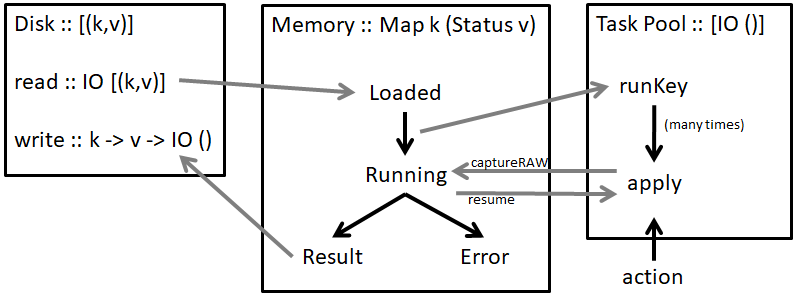

Architecture
The theory behind Shake is documented in the Build Systems a la Carte paper. The full code is on GitHub. A high-level architecture diagram is:

Data Storage
At it's heart, the Shake "database" (not really a database) stores a mapping from keys (k) to values (v). That mapping is stored on disk as a list of (k,v) pairs. When Shake computes a new value for k, it appends it to the end of the file. When Shake starts, it loads the list, keeping only the last value for any given k, and producing a Map k v. On disk, each entry is prefixed by its size, so that if the file is truncated (e.g. machine shutdown), any trailing incomplete data can be discarded.
When operating in memory, Shake uses the data type Map k (Status v), with the approximate definitions:
data Result v = Result {result :: v -- ^ the result associated with the Key ,built :: Step -- ^ when it was actually run ,changed :: Step -- ^ when it last changed ,depends :: [[Id]] -- ^ dependencies (Id is roughly key) } data Status v = Loaded (Result v) | Running (Either SomeException (Result v) -> IO ()) | Failed SomeException | Ready (Result v)
Data is loaded in the Loaded state. When someone demands a key it moves to Running - anyone who subsequently demands it will be added to the callback. After the run completes it becomes either Failed or Ready.
Execution Model
Shake runs values in the Action monad, which is a combination of some global state (e.g. settings), per-rule state (e.g. dependencies) and continuations, with IO underlying everything. The execution model of Shake is that every Action computation is either blocked waiting for a Running to complete, or queued/executing with the thread pool. The thread pool has a list of things to do and runs them in a given priority order, respecting parallelism constraints. Most threads start up, do a bit of work, block on a Running and leave it for another item in the thread pool to requeue them.
To pause a thread we use continuations, meaning the most important operation on Action (which isn't available to users!) is:
captureRAW :: ((Either SomeException a -> IO ()) -> IO ()) -> Action a
This function stops an Action in its tracks, resuming it when the continuation is called. One invariant of Shake, which is (sadly!) not tracked by the type system is that every continuation passed to captureRAW must be called exactly once.
The symmetry between Running and captureRAW is deliberate, and convenient.
To kick start the thread pool, the user specifies things to run with action - a Shake program completes when all those initial action calls have completed.
Rules
The final piece of the puzzle is what Shake actually does to build a key. The core of Shake is abstract over the k and v, but Shake ships with an outer layer of around ten additional rule types – the most important of which is files. Taking an idealised (and inefficient) file rule, we can think of it as mapping from file paths to file contents. To provide such a rule, we first declare the type mapping:
type instance RuleResult FilePath = String
And then declare the rule. The rule says how to take the key (the filename), whether its dependencies have changed, the old value (the old contents), and produce a new value (the current contents). In addition, the rule must say if the contents have changed in a meaningful way, which causes anyone who depended on them to rebuild.
Shake programs typically call apply which builds a list of keys in parallel, moving all the keys to Loaded (or at least one to Failed) before continuing.